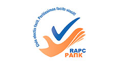
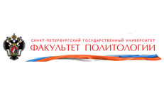
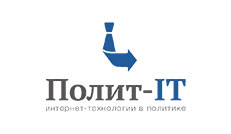

Мы – небольшая консалтинговая/исследовательская компания с большими возможностями. Расположены в Петербурге, работаем где угодно. Специализируемся преимущественно на политической сфере, но также работаем и в бизнес маркетинге.
Ключевая компетенция – предоставление данных, информации и знаний, необходимых для принятия управленческих решений. Масштаб практически любой — от разовой консультации до построения систем, обеспечивающих получение информации из большого числа регионов в ежедневном режиме (в случае задействования персонала в регионах) или приближенному к реальному времени (в случае IT-систем анализа СМИ и социальных сетей).
За 15 лет работы наши проекты охватили:
83 из 85 регионов России (кроме Еврейской автономной области и Чукотского автономного округа),
от 1 до 5 проектов по ряду других стран (Украина, Казахстан, Грузия, Азербайджан, Нигерия, Тайланд).
Бианки Валентин Александрович
Политический консультант, исследователь. Родился в 1981 году в Ленинграде/Петербурге, правнук писателя Виталия Бианки. В 1998 окончил Аничков лицей, в 2003 — кафедру политической психологии Санкт-Петербургского государственного университета, на ней же защитил кандидатскую диссертацию по политической психологии в 2006 году.
Член правления Российской ассоциации политических консультантов.
Вошел в топ-10 политтехнологов России по версии опроса профессионального сообщества в 2013 году.
Ключевая прикладная специализация – исследования и консалтинг в области стратегий кампаний, оценки кандидатов, партийном строительстве; выстраивание систем мониторинга любого типа; реже – ведение кампаний.
Руководил проектами, охватывавшими параллельно 20 регионов.
Провел более 500 исследований, более 30 проектов.
Работал на факультете психологии с 2003 по 2009, с 2012 – на факультете политологии СПбГУ, в должности старшего научного сотрудника (лаборатория политического консультирования, кафедра российской политики).
Ключевые научные интересы: дизайн психологических и политических исследований; моделирование психолого-политических процессов и явлений; распространение информации, формирование установок в социаль\ных сетях.
Член Международного общества политических психологов (ISPP).
Консультант компании Inbergo по психологическим аспектам исследований. Компания занимается построение систем класса Big Data с использованием принципов и технологий Data Mining для анализа больших объемов данных и использование результатов анализа в режиме реального времени.
Научный руководитель проекта Polit-IT компании Inbergo, стартовавшего в 2013 году. Проект нацелен на изучение распространения политической информации в интернете в целом и, в особенности, в социальных сетях.